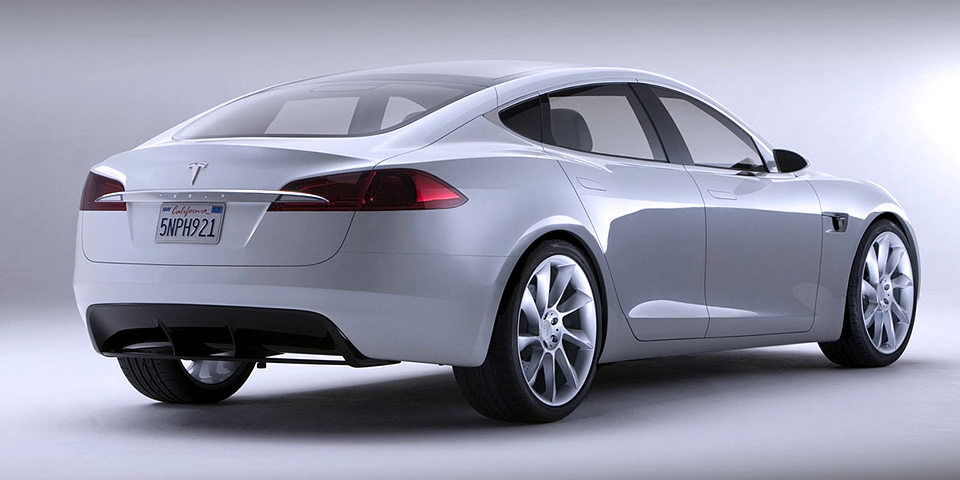
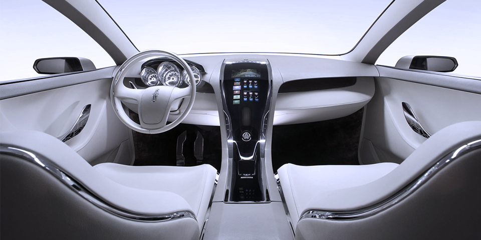

3.2s
0 - 60 Max Acceleration
275mi
Range at 65 MPH
5+2
Available Seats
Carbon Fiber Spoiler
Beginning with vehicles manufactured in late September 2014, all new Model S's come equipped with a camera mounted at the top of the windshield, forward looking radar in the lower grill, and ultrasonic sonar sensors in the front and rear bumpers that provide a 360-degree buffer zone around the car.


Premium Interior
The instrument panel is a 12.3in (31cm) LCD display that speed, power usage, charge level, estimated range, and active gear. The gearbox can be set to Drive, Neutral, Reverse, and Park.
JOIN US FOR A TEST DRIVE